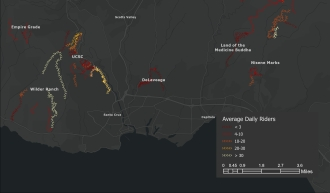

Amtrak Dashboard
Analyzing California's Amtrak performance using SQL and Tableau.
I recently graduated from UCSB with a degree in Data Science. I worked as a data analyst and software support for UCSB Basic Needs, helping student services track and report better insights. I have research experience in unsupervised machine learning and test design and I am passionate about working with geographic data.
Analyzing California's Amtrak performance using SQL and Tableau.
A Python and Clover API application that automates order entry and inventory updates.
Report pipeline for a conference software using SQL in Python.
Analyzing F1 broadcast exposure with PyTorch image classification and data visualization.
Predicting Premier League match results with machine learning, web-scraped data, and betting odds.
Measuring how the urban heat island changed over time and what development patterns influenced it.

Visualizing mountain bike trail popularity using Strava API data and ArcGIS Pro.
Utilizing survey data and item response modeling to measure preparedness and improve a survey instrument. .